米子市皆生のサイノカミ
皆生八代荒神社の自然石
最終更新：
米子市の皆生八代荒神社にはサイノカミさんがあります。
その他、秋の例祭で奉納される長大な「くちなわさん」や、珍しいカメのワラ細工など見どころ満点！
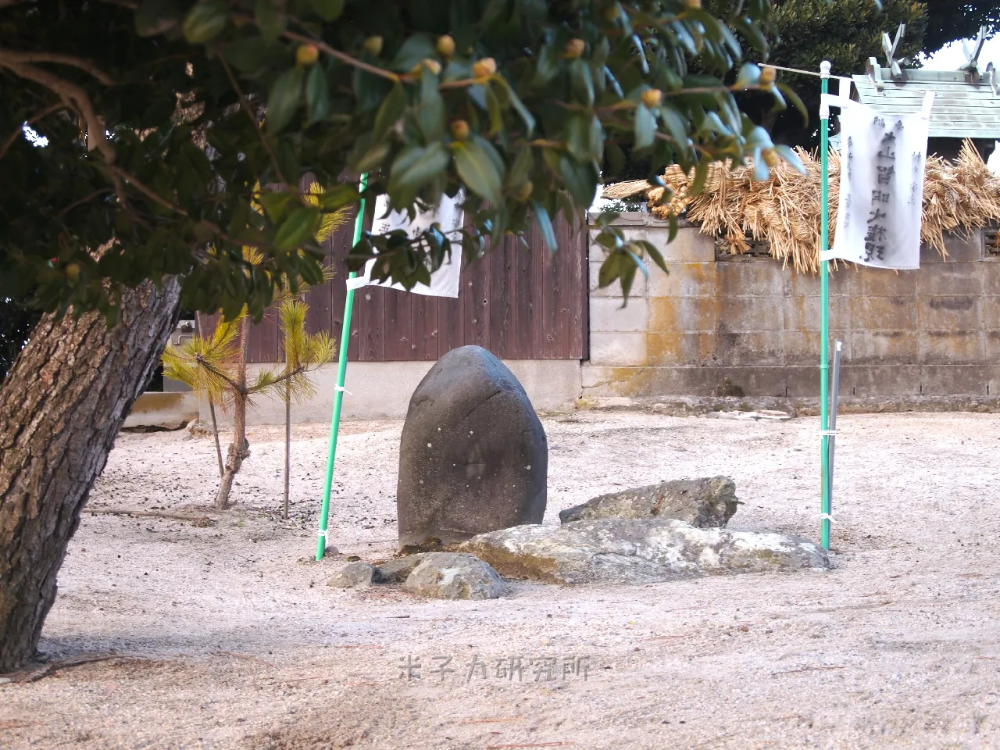
- 地域
- 鳥取県米子市
- 目印
- 皆生八代荒神社
- 対象
- 自然石 × 1基
- 参考
- 石に刻まれた祈り2 No.05
- 八代荒神社案内板
サイノカミの依代について
拝殿右のほうにある自然石が依代で、「佐斐神神社」および「大山智明大権現」の幟旗が目印です。
多くの人が参加する秋の例祭では、お年寄りの方を中心に次々と手をあわせておられました。
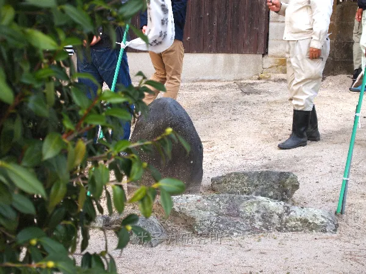
秋の例祭🍁2023-11-21 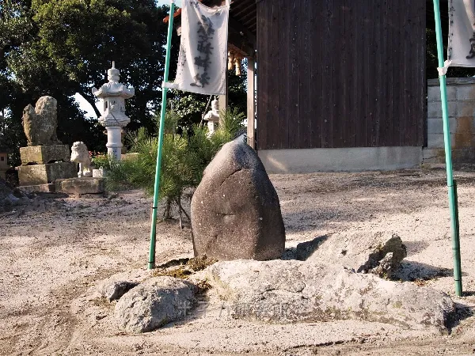
2021-09-09 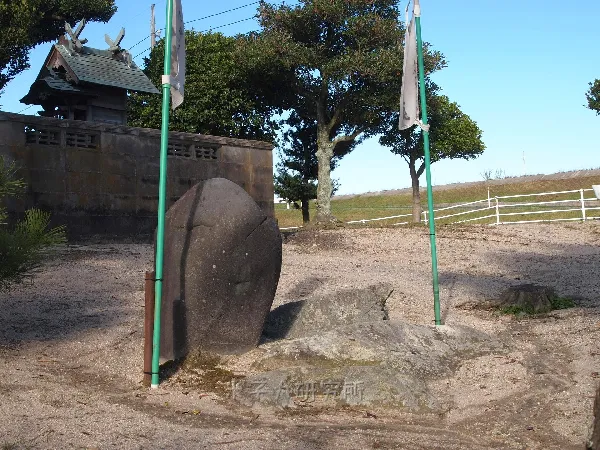
2021-09-09 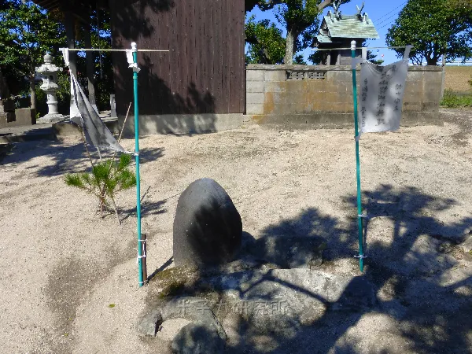
2020-09-14 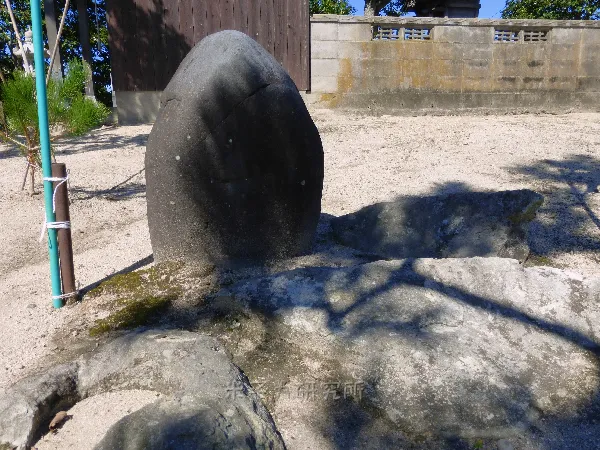
2020-09-14
くちなわさん祭り
例祭である秋の申し上げ祭りで、勤労感謝の日に開催されます。
長大なくちなわさんを抱えて、神主さんを先頭に集落を練り歩く本格的なやつです。
珍しいカメのワラ細工も見どころ！
ここら辺ではくちなわさんを毎年作る地区がそもそも珍しく、明確に力を入れておられるのが伝わってきます。
私のようなギャラリーもたくさん集まり、たいへん賑やかですし、そもそも出店無しでここまで盛り上がる例祭というのは素直に凄いと思いました。
開催時間は数日前から拝殿に貼り出されていました。
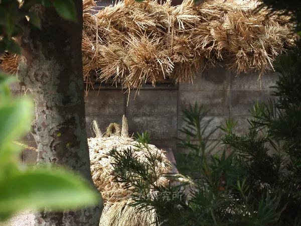
2023-11-22
作ったばかりのカメ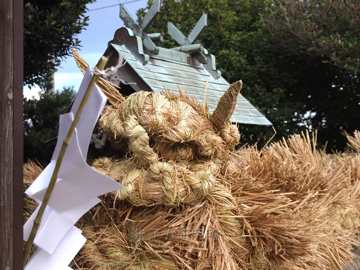
2023-11-22
作ったばかりのくちなわさん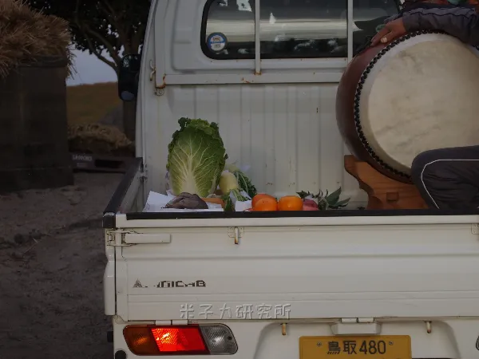
2023-11-22
神饌なお野菜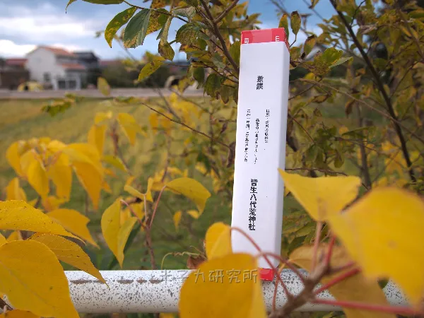
2023-11-22
撤饌
2023-11-22
作ったばかりのカメ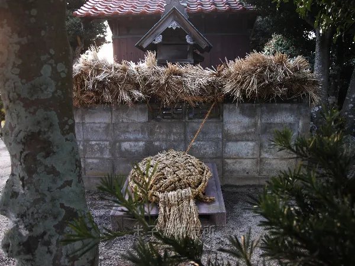
2023-02-11
去年のカメ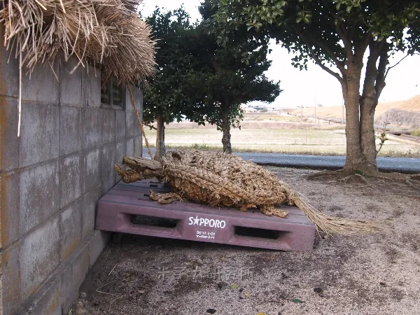
2023-02-11
去年のカメ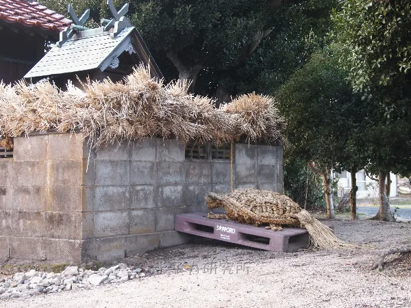
2023-02-11
去年のカメ
鳥居の横にある由緒碑には、くちなわさん祭りについて以下のように書いてあります。
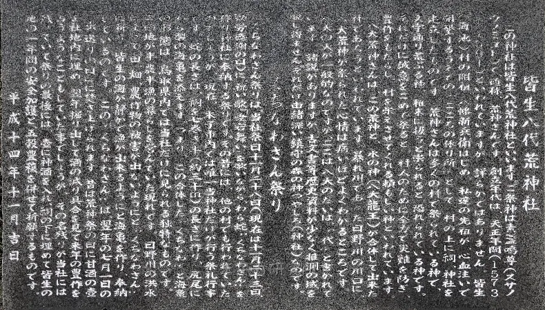
皆生八代荒神社の由緒碑 くちなわさん祭りは、当社祭日11月28日（現在は11月23日、勤労感謝の日）に、祝い歌「愛宕舞い」を歌いながら、わら蛇 "くちなわさん" を作り神社に奉納する祭りです。
その昔には、他の村でも行われていたのでしょうが、現在、米子市内では唯一当神社だけが行う祭礼行事です。
蛇の長さは、祠を七巻半（約30m）の長さに作り、尻尾にわら製の海亀を添えます。
つまり、この合体した"くちなわ"と海亀の形態は、鳥取県内では当社だけに見られる独特なものです。
この地が半農半漁の暮らしを営んでいた現れです。
日野川の洪水によって、田、畑、農作物の被害が出ないようにと"くちなわさん"に祈り、皆生の海が静かで漁ができるようにと海亀を作り、奉納しているのです。
この"くちなわさん"は、翌年の7月1日の虫送りの日に焚き上げられます。
昔は荒神祭の日に甘酒の壺を社地内に埋め、翌年掘り出して酒の減り具合を見て来年の豊作を占うようなこともしていた事でしょうが、その名残が当社には残っていて、祭りの最後には、壺に神酒を入れ、祠の下に埋めて皆生の地の1年間の安全加護と、五穀豊穣を併せて祈願するものです。平成14年11月吉日
由緒碑
虫送り
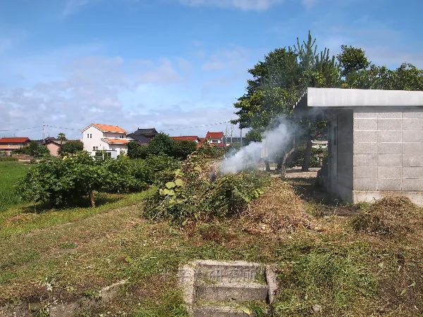
🐛虫送り／お焚き上げ
虫送りはやっておられますか？と、区長さんにお聞きしてみたところお焚き上げをすることで兼ねているんだよ
と教えてくださいました。
前年のくちなわさんやカメもこの日に任期満了となります。
7月1日前後の一斉清掃の日程に合わせて開催されます。
皆生八代荒神社について
由緒碑には神社についても書いてあります。
その他神社周辺の様子もご覧いただきながら今回はここまで。
この神社は皆生八代荒神社といいます。
ご祭神は素盞嗚尊（スサノウノミコト）で、通称、荒神さんです。
創立年代は、天正年間（1573-1591）といわれていますが、詳らかではありません。
皆生（海池）村の開祖、八幡新兵衛はじめ、私達の先祖が、心血注いで開墾するうえでの、こころの依り所として、村の上に祠、神社を建立したものです。
荒神さんは多くの村で祭られている神で、文字通り荒ぶる神、粗末に扱うと祟られると、恐れられている神です。
それだけに誠意をこめて祭ると、村人のために全力で災難を防ぎ、豊作をもたらし、村を栄えさせてくれる頼もしい神といわれています。
八大荒神さんは、この荒神と、水の神（八大龍王）が合体して出来た神であろうといわれています。
暴れ川であった日野川の川口に、八大荒神が祭られた心情は痛いほどよくわかるところです。
八大の大が一般的なのですが、ここは八大のだいは"代"と書かれています。
諸説がありますが、古文書など歴史資料が少なく推測の域を脱し得ません。
それだけ由緒深い鎮守の森の神つやしろ（神社）なのです。由緒碑
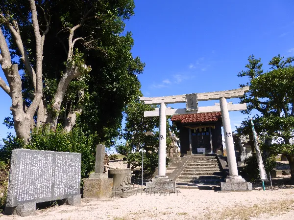
2020-09-14 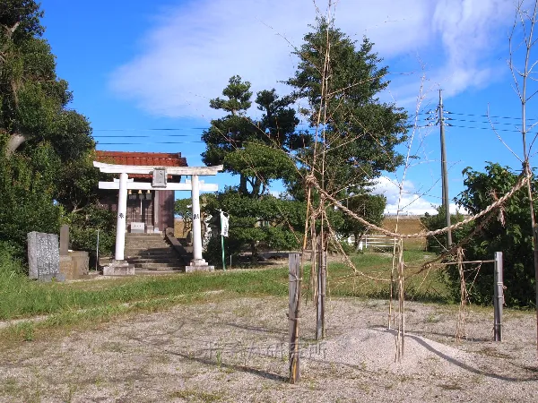
2021-09-09 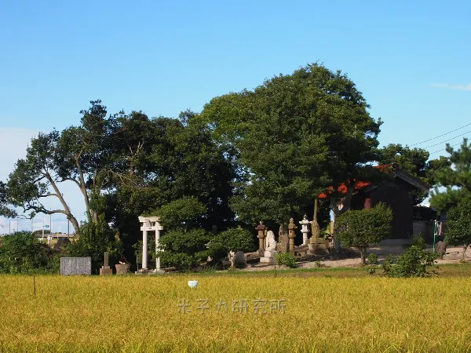
2021-09-09 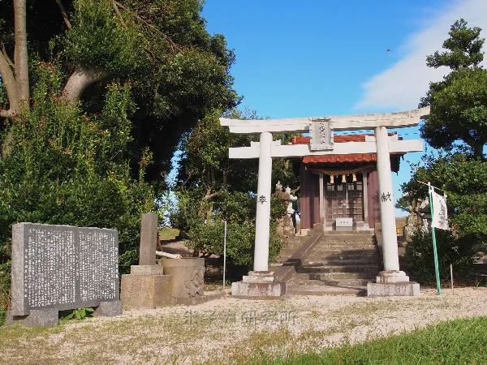
2021-09-09 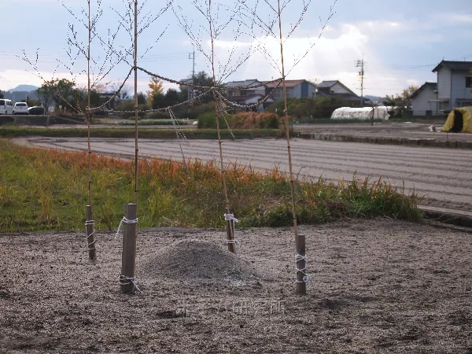
2023-11-22 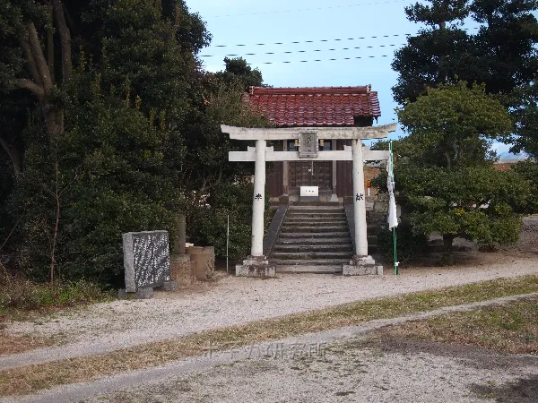
2023-02-11